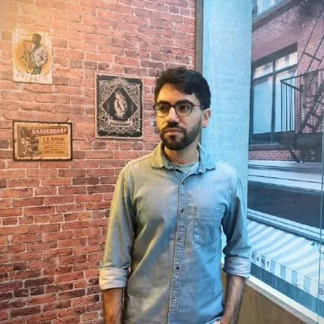

Maxx Lubrificantes
HTML · CSS · JavaScript
Site institucional de produtos e serviços para uma distribuidora de lubrificantes industriais.
(ele/dele)
Desenvolvedor Fullstack Sênior
Construo e mantenho sistemas web em produção desde 2021. Hoje atuo pela Brilliant Machine na Facility Grid, empresa norte-americana de comissionamento na construção civil.

05/2024 – atual · alocado na Facility Grid (EUA), comissionamento na construção civil
07/2024 – atual
05/2024 – 07/2024
07/2021 – 04/2024 · alocado no Banco de Brasília (BRB)
12/2019 – 07/2021 · empresa de previdência privada do BNDES
03/2019 – 12/2019 · gráfica online
Também: APIs REST, WebSockets, filas e jobs no Laravel, PHPUnit, CI/CD, SCSS, Postman, Jira, Figma, Scrum e Kanban.
Passe o mouse sobre um projeto para ver o logo e a descrição.
HTML · CSS · JavaScript
Site institucional de produtos e serviços para uma distribuidora de lubrificantes industriais.
Angular · Node.js · TypeScript · OpenAI API
Análise de fundos imobiliários com IA: você digita o ticker e recebe uma explicação simples, feita com dados de várias fontes públicas.
JavaScript · HTML · CSS · Vite
Projeto didático inspirado em Mario Kart: um simulador de corridas em que cada piloto tem velocidade, manobrabilidade e poder próprios.
React · JavaScript · CSS
Estudo de React que mostra as corridas de rua que já corri.
HTML · CSS · JavaScript
Consulta de CEPs de todo o Brasil pela API ViaCEP.
PHP · Laravel · Blade
Sua estante digital: acompanhe o que já leu, está lendo ou pretende ler.
Sou carioca e tenho 29 anos. Flamenguista, fã de Fórmula 1, e amo correr.
O que mais gosto no meu trabalho é ver o que construí sendo usado pelas pessoas.
Estou aberto a oportunidades como desenvolvedor fullstack. O jeito mais rápido de falar comigo é por e-mail ou LinkedIn.